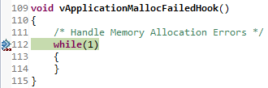
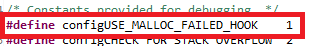

Introduction
The SimpleLink™ MSP432™ and Wi-Fi® CC3220 software development kits (SDKs) include the ability to use FreeRTOS™ (as well as the TI-RTOS). This workshop will explain what this really means.
Here's what we'll learn:
- How TI Drivers work with FreeRTOS
- POSIX support with FreeRTOS
- Understand parts of FreeRTOS kernel projects
Prerequisites
Recommended Background Reading
It is strongly recommend you are familiar with the following item.
FreeRTOS Installation
Just to be very clear and not surprise you at the end, the FreeRTOS kernel is not bundled into the SimpleLink SDK. You'll need to download FreeRTOS yourself from www.freertos.org. Please refer to the <SimpleLink_SDK_Install_Dir>/docs/Documentation_Overview.html file to find the "SimpleLink SDK Quick Start Guide" for the recommended version and how to plug FreeRTOS into your IDE.
FreeRTOS Components In SimpleLink SDK
This workshop will cover the following sections to help you get your application working with FreeRTOS and the SimpleLink SDK.
- POSIX support for FreeRTOS
- TI Drivers work with FreeRTOS
- Projects to build FreeRTOS kernel
- FreeRTOS examples
Let's go into more details on each one of these items. We'll focus on CCS, but the same concepts apply to IAR and commandline makefiles.
POSIX Support
Portable Operating System Interface (POSIX) is an IEEE industry API standard for OS compatibility. The SimpleLink SDK provides support for POSIX APIs on top of FreeRTOS (as it does for TI-RTOS). For a more details description of the POSIX support in SimpleLink SDKs, please refer to the POSIX Overview Workshop.
TI Drivers
The TI Drivers (e.g. UART, I2C, Power Management, etc.) are written to be used with the Driver Porting Layer (DPL). The SimpleLink SDK includes a DPL implementation for both FreeRTOS and TI-RTOS.
DPL is not a full feature Operating System Abstraction Layer (OSAL).
It was developed specifically to meet the needs of the TI Drivers. Therefore it is not recommended that application code use the DPL interface directly. SimpleLink SDK reserves the right to change the DPL (and then all the driver implementations). For application code that wants OS abstraction, please use POSIX APIs, not DPL.
Other SimpleLink SDK Components and FreeRTOS
Here is a quick overview of some of the other SimpleLink SDK components works with FreeRTOS.
- third_party\fatfs: Works with FreeRTOS
- ti\display: Works with FreeRTOS
- ti\grlib: Works with FreeRTOS but should only be used by one task as a time.
Kernel Projects
The FreeRTOS kernel is built via a provided project. The examples that are FreeRTOS based (e.g. TI Drivers examples) point to the kernel project.
In CCS and IAR, the kernel project requires that FREERTOS_INSTALL_DIR be defined. Please refer to the "SimpleLink SDK Quick Start Guide" for details on to set this up.
Build failure
FREERTOS_INSTALL_DIR must be set to build any FreeRTOS example.
The SDK provides the kernel project in the kernel/freertos/builds/BOARD/release directory.
The configuration of the FreeRTOS kernel is done in the FreeRTOSConfig.h file.
The kernel project is automatically imported when a FreeRTOS example is imported. A copy of the kernel project is made in the workspace.
Alternatively, this project can be imported into CCS by selection Project → Import CCS Projects... and navigating to the <SimpleLink_SDK_Install_Dir>/kernel/freertos/builds directory. Then select the desired board and compiler project.
Here is what the imported kernel project looks like. You see the FreeRTOSConfig.h file. The dpl and posix directories contain the files in the SimpleLink SDK to support those features. The freertos directory contains files in the FreeRTOS installation (which FREERTOS_INSTALL_DIR points to).
The result of building this project is a library that can be used for building the FreeRTOS based examples.
For more details on how to change or create new FreeRTOS kernel projects, please refer to the "SimpleLink SDK User Guide".
Examples
Many examples (e.g. TI Drivers examples) are available in both FreeRTOS and TI-RTOS. When a example is imported, the kernel project is automatically imported also. Here is a picture of the projects when empty was imported.
The empty project points to the kernel project via the Project Properties → Build → Dependencies setting. Please refer to the "SimpleLink SDK User Guide" for more details on the management of this setting.
There are no native FreeRTOS examples in the SimpleLink SDK. Instead the POSIX layer is used to allow examples to be used with TI-RTOS or FreeRTOS. All the FreeRTOS specific code is in main_freertos.c file (there is a main_tirtos.c file for TI-RTOS based examples). The majority of the file contains POSIX APIs, but at the end of main(), the call to start the FreeRTOS scheduler (vTaskStartScheduler()) is made.
Additionally, the main_freertos.c file contains FreeRTOS hook functions.
The linker command file is slightly different from the TI-RTOS one also. The two set up the dynamic heap slightly differently in the linker file.
POSIX is not required for FreeRTOS
Even though all the FreeRTOS examples use POSIX in the SimpleLink SDK, it is not required. This was done to make sure the examples worked for both operating systems. You can use the native FreeRTOS APIs instead if you prefer. Please refer to the demos\portable and demos\portableNative examples to see a comparison of using POSIX vs the native RTOS APIs.
Lab: Getting started
This lab will explore some of the configuration parameters of FreeRTOS.
Software
- CCS as specified by your SimpleLink SDK Release Notes (CCS Cloud is also possible, but the steps below will assume you are using the desktop CCS)
- Any SimpleLink SDK
Hardware
- Any supported SimpleLink LaunchPad™ Development Kit
Task 1: Import FreeRTOS Empty Driver Project
In Resource Explorer, import the FreeRTOS empty example in examples/rtos/Board/drivers/empty directory. You can select either gcc or ccs.
Task 2: Add a bogus malloc()
In main_freertos.c after Board_initGeneral() add an allocation of a very large size (e.g. malloc(0x80000)).
/* Call driver init functions */
Board_initGeneral();
char *buf;
buf = malloc(0x80000);
main_freertos.c
Task 3: Build
Build and load the project. Before you run, set a hardware breakpoint in the vApplicationMallocFailedHook() function in main_freertos.c.
If you do not have the FREERTOS_INSTALL_DIR set you'll get a build error.
Please refer to the "SimpleLink SDK Quick Start Guide" for details on to set this up.
Task 4: Run
Run the application. You should be in vApplicationMallocFailedHook() now.

What happened? You tried to allocate too big of a block of memory and the malloc falled. The configUSE_MALLOC_FAILED_HOOK is set to 1 in FreeRTOSConfig.h in the FreeRTOS kernel project.

Therefore, if an allocation failure occurs, the vApplicationMallocFailedHook() is called.
Task 5: Remove the hook function
Edit the FreeRTOSConfig.h file in the FreeRTOS kernel project and change configUSE_MALLOC_FAILED_HOOK to 0.
#define configUSE_MALLOC_FAILED_HOOK 0
FreeRTOSConfig.h
Task 6: Build and run
Build and load the empty project. Now step over the malloc() call and you see that
- The hook function was not called.
- The
malloc()call returned NULL.
Quiz
Let's see if you picked up some key points...
TI Drivers can be used with FreeRTOS?
To use FreeRTOS, do you have to use POSIX?
Can you change the FreeRTOSConfig.h file to tailor the kernel to your needs?
Should application code use DPL directly?
Additional Resources
Additional training and reference material for FreeRTOS is available in the following places:
General FreeRTOS Support
SimpleLink Academy
SimpleLink SDK
- SimpleLink SDK Quick Start Guide
- SimpleLink SDK User Guide
Forums
This work is licensed under a Creative Commons Attribution-NonCommercial-NoDerivatives 4.0 International License.